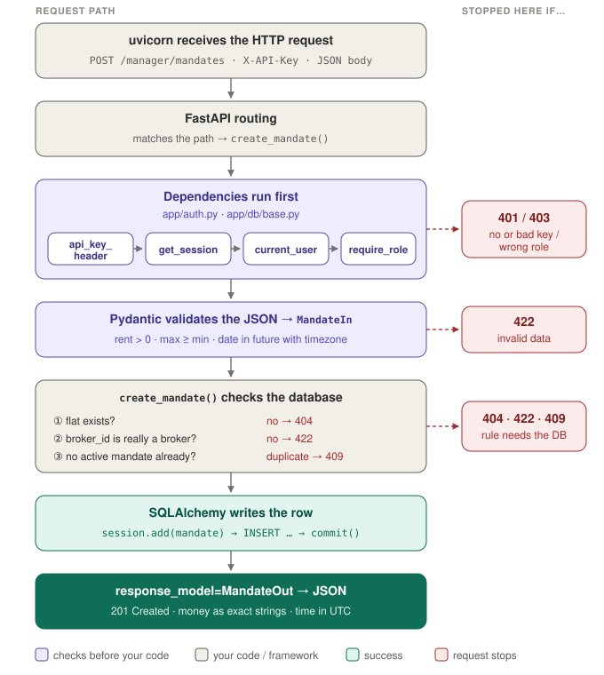

PropLock Feature 1: Phase 0–1 Study Guide
Everything explained so far: the Python basics, how a request flows, every file in Phase 1, the 11 database tables, and how they work together through a manager's day.
1. How to use this guide
- First read: sections 2 → 5 give the mental model. Don't skip the big picture.
- When reading code: keep section 6 open next to the file it explains. Paths are relative to
D:\hackathon\paypal\backend\. - When confused about data: sections 7 and 8 explain every table and how rows link.
- Revision after a few days: try the questions in section 10 before opening the answers.
Try it live while reading:
cd D:/hackathon/paypal/backend
.venv/Scripts/python -m uvicorn app.main:app --reloadOpen http://localhost:8000/docs, click Authorize, and paste a key from backend/demo_keys.json.
2. The big picture: a restaurant
| Restaurant | Our app |
|---|---|
| A customer places an order | A manager or broker sends a request over the internet |
| The waiter takes the order to the right place | uvicorn + FastAPI receive it and pick the right function |
| The bouncer checks your ID card | Login (API key): who are you, and are you allowed? |
| The order form is checked | Pydantic: is the data valid? |
| The kitchen cooks | Your function, e.g. create_mandate |
| The ledger book | The database: tables of rows |
| The plate is served | The response, sent back as JSON |
- HTTP request: a message to a server, e.g.
POST /manager/mandates.POST= create,GET= read./manager/mandatesis the address. - JSON: the text format data travels in. Looks like a Python dict:
{"min_rent": "32000", "status": "ACTIVE"}. - Database: like an Excel workbook. A table is a sheet, a column is a header, a row is one line of data. SQL is the language to talk to it. SQLite keeps the whole database in one file,
proplock.db.
3. Python refresher (only what Phase 1 uses)
Variables, functions, type hints
rent = 35000 # a number (int)
name = "Rajesh" # text (str)
nothing = None # "no value"
def add_gst(price: float) -> float: # "price is a float, returns a float"
return price * 1.18Type hints like price: float are labels. Python doesn't enforce them, but FastAPI, Pydantic and SQLAlchemy read them and act on them. str | None means "text or nothing".
Classes, objects, inheritance
class Dog: # the blueprint
def __init__(self, name): # runs when you build one
self.name = name # self = "this particular dog"
rex = Dog("Rex") # an object built from the blueprint
class Mandate(Base): ... # inheritance: Mandate gets everything Base has → it's a DB tableImports, dicts and **
from decimal import Decimal # borrow Decimal from the decimal library
from app.config import get_settings # borrow from our own file app/config.py
person = {"name": "Rajesh", "age": 30}
greet(**person) # same as greet(name="Rajesh", age=30)Decorators: the @ line
@app.get("/health") # sticky note: "call the function below when someone visits /health"
def health(): ...try / finally, yield, raise, with
try:
use_the_thing()
finally:
close_the_thing() # always runs, even after an error
def borrow_book():
print("take book")
yield "the book" # hand it over and PAUSE
print("put book back") # resumes later to clean up
if age < 0:
raise ValueError("bad") # stop right here with an error
with open("f.txt") as f: # opens, and closes automatically at the end of the block
...f-strings and lambdas
f"pl_{role}_{key}" # text with values filled into {}
lambda e: [m.value for m in e] # a tiny unnamed function: "list each item's value"4. Phase 0 recap: foundations
| What | Why |
|---|---|
git init in paypal/, one commit per step | See exactly what each step changed; undo if needed |
.gitignore excludes .venv, *.db, .env, demo_keys.json | Secrets and generated files never get committed |
Virtual environment backend/.venv | This project's libraries can't clash with other projects |
Exact pins in pyproject.toml (fastapi==0.162.0) | Everyone installs identical versions (the old project used >= and missed two libraries: issue M8) |
One Settings class | All keys and flags in one place; an empty model name means "not configured" → UNVERIFIABLE, never a guess |
App factory create_app() | Tests get a fresh, independent app each time |
The Groq spike (risk first)
Before building anything that depends on AI, one script proved the riskiest dependency works:
| Check | Result |
|---|---|
| Key valid | ✅ |
Claim extraction, text model openai/gpt-oss-120b, JSON mode | ✅ found "2 min walk to metro", "10 min drive to Bagmane", "Fully Furnished" |
Two images in one request, vision model qwen/qwen3.8-27b | ✅ same room + sofa → same room; window and door swapped → different room |
- JSON mode guarantees JSON, but not our shape. Every reply is checked against a Pydantic model.
- Images travel as text: the bytes are base64-encoded into
data:image/jpeg;base64,…and sent as one more item in the chat message. - The test rooms were drawings, so accuracy on real flat photos is still to be measured in Phase 6.
5. A request's journey
Following one real request through every layer: a manager creating a mandate.
POST /manager/mandates
X-API-Key: pl_manager_abc123...
{"property_id": "PROP-BLR-001", "broker_id": "818f...", "min_rent": "32000",
"max_rent": "35000", "max_deposit": "70000", "valid_until": "2026-12-31T23:59:00+05:30"}
In one paragraph: uvicorn receives the request and hands it to FastAPI, which finds create_mandate. Before running it, FastAPI runs its dependencies: read the key header, open a database session, fingerprint the key and look up the user (401 if not found), check they're a manager (403 if not). Then Pydantic checks the JSON (422 if invalid). Only then does the function run: flat exists? (404) real broker? (422) duplicate? (409). It builds a Mandate object, SQLAlchemy turns it into an INSERT and commits, and FastAPI sends the result as JSON with 201.
Why this order: cheap checks (key, input shape) run before expensive ones (database queries). A request with no key never reaches your code; invalid JSON never reaches the database.
6. Each file, line by line
6.1 app/config.py: the settings
class Settings(BaseSettings):
model_config = SettingsConfigDict(env_file=".env", extra="ignore")
database_url: str = "sqlite:///./proplock.db"
groq_api_key: str | None = None
groq_text_model: str = ""
@lru_cache
def get_settings() -> Settings:
return Settings()BaseSettingsfills each field from an environment variable with the same name (case doesn't matter), then.env, then the default.extra="ignore": unknown lines in.envdon't crash anything.groq_text_model: str = "": empty means "not set up". Later the app says "can't verify" instead of pretending.@lru_cache: "remember the answer"..envis read once; later calls reuse the same object.
6.2 app/main.py: the front door
def create_app() -> FastAPI:
app = FastAPI(title="PropLock AI - Feature 1: Listing Audit", version="0.1.0")
@app.get("/health", tags=["health"])
def health() -> dict[str, str]:
return {"status": "ok", "env": get_settings().app_env}
app.include_router(me.router) # plugs in /me
app.include_router(manager.router) # plugs in every /manager/... address
return app
app = create_app() # uvicorn looks for this variable@app.get("/health"): "on GET /health, run this." The returned dict becomes JSON.- A router is a group of related addresses kept in another file.
- Why a function? Tests call
create_app()for a fresh app each time, so tests never affect each other.
6.3 app/db/base.py: connecting to the database
The engine (the phone line to the ledger room)
def make_engine(url: str) -> Engine:
connect_args = {"check_same_thread": False} if url.startswith("sqlite") else {}
engine = create_engine(url, connect_args=connect_args)
if url.startswith("sqlite"):
@event.listens_for(engine, "connect")
def _enable_foreign_keys(dbapi_connection, _record):
dbapi_connection.execute("PRAGMA foreign_keys=ON")
return enginecheck_same_thread=False: SQLite normally refuses use from another thread (worker). The web server uses several, so we switch that off. Sessions are still never shared between requests.@event.listens_for(engine, "connect"): "run this every time a connection opens."- Foreign key = "this column must point to a real row in another table". SQLite ignores foreign keys unless
PRAGMA foreign_keys=ON. Without it, a mandate could point at a flat that doesn't exist.
Sessions (a shopping basket)
SessionLocal = sessionmaker(bind=engine, autoflush=False, expire_on_commit=False)
def get_session() -> Iterator[Session]:
session = SessionLocal() # make a new basket
try:
yield session # hand it to the endpoint, PAUSE
finally:
session.close() # always close it afterwards- A session collects changes;
commit()saves them all together. If anything fails before that, nothing is saved. expire_on_commit=False: after saving, objects keep their values, so we can return them without another query.- The
yieldpattern: open, let the endpoint use it, always close. Connections never pile up.
UTCDateTime (fixing time zones)
The problem: UTC is the world reference clock (India = UTC+5:30). A time with a zone is aware; without one it's naive. SQLite throws the zone away, so an aware time goes in and a naive one comes out, and Python crashes when comparing naive with aware.
class UTCDateTime(TypeDecorator):
impl = DateTime
def process_bind_param(self, value, dialect): # runs when SAVING
if value is None:
return None
if value.tzinfo is None:
raise ValueError("naive datetime; use datetime.now(UTC)")
return value.astimezone(UTC).replace(tzinfo=None)
def process_result_value(self, value, dialect): # runs when READING
return value.replace(tzinfo=UTC) if value is not None else None
class Base(DeclarativeBase):
type_annotation_map = {datetime: UTCDateTime}- Saving: refuse naive times (a bug), convert to UTC (
23:59 +05:30→18:29 UTC), strip the label. - Reading: put the UTC label back, so every time that comes out is aware.
type_annotation_map: "every column labelleddatetimeusesUTCDateTime". Set once, works everywhere.
6.4 Migrations (Alembic)
The models say what tables should exist; the database file starts empty. A migration is a recipe to change the database, with an undo.
def upgrade() -> None: # do it
op.create_table('users',
sa.Column('id', sa.String(length=36), nullable=False),
...
)
def downgrade() -> None: # undo it
op.drop_table('users')alembic revision --autogenerate -m "..." # compare models with DB, write a new recipe
alembic upgrade head # run every recipe not yet run
alembic downgrade base # undo them all- Alembic records which recipes ran in a table called
alembic_version. nullable=Falsecame fromMapped[str]without| None.- In
alembic/env.py:from app.db import modelsloads the tables;target_metadata = Base.metadatais what to compare against; the URL comes from app settings unless a test sets its own. render_as_batch=True: SQLite can't do mostALTER TABLE, so Alembic copies the table instead. Future migrations just work.
6.5 app/auth.py: the bouncer
Making and hashing keys
def generate_key(role: Role) -> str:
return f"pl_{role.value.lower()}_{secrets.token_urlsafe(24)}" # "pl_broker_Xq3…"
def hash_key(key: str) -> str:
return hashlib.sha256(key.encode("utf-8")).hexdigest() # 64-char fingerprintsecretsuses the computer's secure randomness. Never userandomfor keys.- A hash is a one-way fingerprint: same input → same output, but you can't go back. The database stores only fingerprints, so a stolen database contains no working keys.
- Why plain SHA-256 is enough (passwords need slow bcrypt): passwords are short and guessable; a 192-bit random key isn't.
Who is this person?
api_key_header = APIKeyHeader(name="X-API-Key", auto_error=False) # also creates the Authorize button
def current_user(
api_key: str | None = Depends(api_key_header),
session: Session = Depends(get_session),
) -> User:
if not api_key:
raise HTTPException(401, "Missing X-API-Key header")
user = session.scalar(select(User).where(User.api_key_hash == hash_key(api_key)))
if user is None:
raise HTTPException(401, "Invalid API key")
return userDepends(...)= "before running me, get me these things."select(User).where(...)builds SQL:SELECT * FROM users WHERE api_key_hash = '…'.session.scalarreturns one user orNone.==insidewhere(...)doesn't compare in Python; SQLAlchemy turns it into SQL.
Is this person allowed?
def require_role(*roles: Role):
def dependency(user: User = Depends(current_user)) -> User:
if user.role not in roles:
raise HTTPException(403, "Requires role: ...")
return user
return dependency
manager_only = require_role(Role.MANAGER)A function that makes functions (a closure): the inner function remembers roles. 401 = "show me your ID". 403 = "I saw your ID, and you can't come in."
FastAPI caches dependencies per request: the endpoint and current_user get the same session, not two connections.
6.6 app/schemas/manager.py: the order-form checker
Money = Field(gt=0, max_digits=12, decimal_places=2)
class MandateIn(BaseModel):
property_id: str
broker_id: str
min_rent: Decimal = Money
max_rent: Decimal = Money
max_brokerage_months: Decimal = Field(default=Decimal("1.00"), ge=0, le=3, decimal_places=2)
valid_until: AwareDatetime # must include a timezone
@field_validator("valid_until")
@classmethod
def must_be_in_future(cls, value):
if value <= datetime.now(UTC):
raise ValueError("valid_until must be in the future")
return value
@model_validator(mode="after")
def rent_range_is_ordered(self):
if self.max_rent < self.min_rent:
raise ValueError("max_rent must be greater than or equal to min_rent")
return selfPydantic validates in three layers. If any fails, FastAPI returns 422 and your function never runs:
- Types and conversion:
"32000"→Decimal("32000"); a date without a timezone is rejected. - Field rules:
gt(>),ge(≥),le(≤),decimal_places, andfield_validatorfor one-field custom rules. - Whole-object rules:
model_validator(mode="after")compares fields, like max ≥ min.
class MandateOut(BaseModel):
model_config = ConfigDict(from_attributes=True) # can be filled from a DB object
id: str
min_rent: Decimal
status: MandateStatusOutput schemas are a whitelist: only listed fields are sent. That's why /me never leaks api_key_hash.
6.7 app/api/manager.py: the kitchen
router = APIRouter(prefix="/manager", tags=["manager"])
manager_only = require_role(Role.MANAGER)
@router.post("/mandates", response_model=MandateOut, status_code=201)
def create_mandate(
body: MandateIn, # already validated
manager: User = Depends(manager_only), # already authenticated
session: Session = Depends(get_session),
) -> Mandate:
if session.get(Property, body.property_id) is None: # ① flat exists?
raise HTTPException(404, ...)
broker = session.get(User, body.broker_id) # ② really a broker?
if broker is None or broker.role is not Role.BROKER:
raise HTTPException(422, ...)
duplicate = session.scalar(select(Mandate).where( # ③ no active duplicate
Mandate.property_id == body.property_id,
Mandate.broker_id == body.broker_id,
Mandate.status == MandateStatus.ACTIVE))
if duplicate:
raise HTTPException(409, ...)
mandate = Mandate(**body.model_dump(), created_by=manager.id) # ④ build
session.add(mandate)
session.commit() # ⑤ INSERT + save
return mandate # ⑥ → MandateOut → JSON 201session.get(Table, id): the fastest lookup by primary key.- Several conditions in
where= all must be true (AND). body.model_dump()→ dict;**spreads it;created_bycomes from the key, never the body.- Sent
23:59+05:30, returned18:29Z: same instant, stored in UTC. Money returns as strings ("35000.00") to stay exact.
6.8 app/db/seed.py: demo data
def seed(session):
if session.scalar(select(User).where(User.email == MANAGER_EMAIL)):
return None # already seeded → do nothing (idempotent)
manager = _user(session, keys, "manager", ...)
...
session.flush() # send INSERTs, get ids, NOT final yet
blr = Property(..., created_by=manager.id)
...
session.commit() # make everything permanent at once- Idempotent: running twice = running once.
flush()vscommit(): flush sends SQL inside the open transaction (so ids exist); commit makes it permanent. A failure in between saves nothing: no half-seeded database.if __name__ == "__main__":runsmain()only when the file is run directly, not when tests import it.- Seeds: manager XYZ Properties Desk; brokers Rajesh (honest) and QuickCash Rentals (future liar); flats PROP-BLR-001 (Bengaluru, Unfurnished) and PROP-CHN-002 (Chennai, Semi-Furnished); three mandates.
6.9 Tests
@pytest.fixture
def db_session(tmp_path) -> Session:
engine = make_engine(f"sqlite:///{tmp_path / 'test.db'}") # brand-new DB per test
Base.metadata.create_all(engine)
with Session(engine, expire_on_commit=False) as session:
yield session
engine.dispose()
@pytest.fixture
def client(db_session) -> TestClient:
app = create_app()
app.dependency_overrides[get_session] = lambda: db_session # the key trick
return TestClient(app)- A fixture prepares something tests ask for by naming it as a parameter.
dependency_overrides: "whenever anything asks forget_session, give it the test database." The real code runs unchanged.- Tests follow arrange → act → assert.
@pytest.mark.parametrizeruns one test once per case (5 bad mandates → 5 runs).with pytest.raises(IntegrityError):proves the database itself refuses bad data.
7. The 11 tables (app/db/models.py)
Each class is a table, each attribute a column, each object a row. Four groups follow the real-world story:
WHO & WHAT PERMISSION THE AD RESULTS & FOLLOW-UP
users ─────┐
properties ┼──────► mandates ───────► listings ──► listing_versions ──► audits ──► outbox_jobs
baseline_photos ┘ ├─ listing_photos └───► trust_events
└─ commute_claimsBuilding blocks
| Piece | What it does | Why |
|---|---|---|
new_id() | random UUID | unguessable, no collisions (counting ids reveal totals) |
utcnow() | now, in UTC | one clock everywhere |
Numeric(12,2) → Decimal | money | 0.1 + 0.2 = 0.30000000000000004 with floats |
Numeric(10,7) | GPS | ~1 cm precision, exact |
enum_column(...) | VARCHAR + CHECK constraint | the database refuses typos like VERIFED |
Mapped[str | None] | optional column | everything else must be filled |
ForeignKey(...) | link to another table | no row points at something that doesn't exist |
The enums (menus)
| Enum | Values |
|---|---|
| Role | MANAGER, BROKER |
| Furnishing | Unfurnished, Semi-Furnished, Fully Furnished |
| MandateStatus | ACTIVE, REVOKED, EXPIRED |
| ListingStatus | DRAFT, SUBMITTED, NEEDS_FIX, IN_REVIEW, VERIFIED, LIVE, EXPIRED, RENTED |
| AuditStatus | NEEDS_FIX, IN_REVIEW, PENDING_MINT, VERIFIED, REJECTED |
| PhotoKind | CHECKIN, EXTRA |
| CommuteMode | walking, transit, driving |
| ClaimSource | FORM (typed by broker), EXTRACTED (found by AI in ad text) |
| JobStatus | PENDING, DONE, FAILED |
Who and what
| Table | Key columns | Meaning |
|---|---|---|
| users | name, email (unique), role, api_key_hash, agency, licence_number, trust_score | Everyone who can log in. Managers and brokers share one table; role separates them. |
| properties | id (e.g. PROP-BLR-001), owner_name, address, state, latitude/longitude, furnishing, created_by | The ground truth. state → Check C; GPS → Checks A and B; furnishing → Check D. |
| baseline_photos | property_id, url, phash, room_type | The manager's photos: shown on the listing and used as Check A's answer key. phash = look-alike fingerprint. |
Permission
| Table | Key columns | Meaning |
|---|---|---|
| mandates | property_id, broker_id, min_rent, max_rent, max_deposit, max_brokerage_months, valid_until, status, created_by | "This broker may list this flat, within these limits." The written version of handing over the keys. Check D compares every listing with it. |
The ad
| Table | Key columns | Meaning |
|---|---|---|
| listings | property_id, broker_id, mandate_id, status, last_confirmed_at | The container for one broker's ad. No title or rent here: those live in versions. |
| listing_versions | version_no (unique per listing), title, description, rent, deposit, brokerage_fee, furnishing | The ad's content. Every edit = a new version; nothing is overwritten (bait-and-switch defence). |
| listing_photos | kind, storage_path, phash, latitude/longitude, captured_at | Check-in and extra photos, attached to a version. |
| commute_claims | destination, minutes, mode, source | "X minutes to Y". source=EXTRACTED shows lies hidden in the ad text (fix M2). |
listing L1 (Rajesh, PROP-BLR-001)
├─ version 1: rent ₹40,000, "2 min to metro" → audit: NEEDS_FIX
└─ version 2: rent ₹35,000, "22 min to metro" → audit: VERIFIEDResults and follow-up
| Table | Key columns | Meaning |
|---|---|---|
| audits | version_id (unique), status, report_json, ruleset_version, signature, paypal_product_id, reviewed_by, review_note | One audit per version. report_json is the exact report shown (fix M7); signature is the HMAC seal (fix M4). |
| outbox_jobs | audit_id, kind, status, attempts, last_error, next_run_at | Work to do after saving (e.g. create the PayPal product), retried until done. Solves the dual-write problem. |
| trust_events | broker_id, kind, points, audit_id | A ledger of score changes with reasons, like a bank statement instead of just a balance. |
1. In ONE transaction: save audit (PENDING_MINT) + outbox job (PENDING)
2. A worker picks up the job → calls PayPal
├─ success → job DONE, audit VERIFIED, paypal_product_id filled
└─ failure → attempts += 1, last_error saved, next_run_at = later → retry8. How the tables work together: a manager's day
Short ids like m-111 stand in for real UUIDs. 🔍 read ✏️ write
Step 0 Account created (seed) ✏️ users
Step 1 Log in (every request) 🔍 users
Step 2 Register a flat 🔍 properties ✏️ properties
Step 3 Find brokers 🔍 users
Step 4 Give Rajesh a mandate 🔍 properties, users, mandates ✏️ mandates
Step 5 Revoke a mandate 🔍 mandates ✏️ mandates
──────────────── later phases ────────────────
Step 6 Rajesh submits a listing uses everything the manager created
Step 7 Manager reviews an audit ✏️ audits.reviewed_by0The manager account exists
| id | name | role | api_key_hash |
|---|---|---|---|
| m-111 | XYZ Properties Desk | MANAGER | 9f2c41… |
This row is the root: every flat and mandate the manager creates points back to m-111.
1Log in (every request)
SELECT * FROM users WHERE api_key_hash = '9f2c41…'; → m-111, role MANAGER ✅No cookie, nothing remembered: each request proves who it is from scratch (stateless).
2Register a flat
POST /manager/properties {"id": "PROP-BLR-003", "owner_name": "Anita Rao", "state": "Karnataka",
"latitude": "12.9352000", "longitude": "77.6245000", "furnishing": "Semi-Furnished", ...}| id | owner_name | state | lat / lng | furnishing | created_by |
|---|---|---|---|---|---|
| PROP-BLR-003 | Anita Rao | Karnataka | 12.9352, 77.6245 | Semi-Furnished | m-111 → users |
users (m-111) ◄──── created_by ──── properties (PROP-BLR-003)3Find brokers
SELECT * FROM users WHERE role = 'BROKER' ORDER BY name; → b-222 QuickCash, b-333 Rajesh4Give Rajesh a mandate (the most connected step)
POST /manager/mandates {"property_id": "PROP-BLR-003", "broker_id": "b-333",
"min_rent": "28000", "max_rent": "30000", "max_deposit": "60000",
"valid_until": "2026-12-31T23:59:00+05:30"}Reads properties (exists?), users (broker?), mandates (duplicate?), then writes mandates:
| id | property_id | broker_id | rent range | max_deposit | valid_until | status | created_by |
|---|---|---|---|---|---|---|---|
| md-444 | PROP-BLR-003 | b-333 | 28,000–30,000 | 60,000 | 2026-12-31 18:29 UTC | ACTIVE | m-111 |
┌──── created_by ────► users (m-111, MANAGER) "who allowed it"
mandates (md-444) ──────┼──── broker_id ─────► users (b-333, BROKER) "who may list"
└──── property_id ───► properties (PROP-BLR-003) "which flat"The mandate is the bridge row. users is linked twice with different meanings; that's normal.
5Revoke a mandate
UPDATE mandates SET status = 'REVOKED' WHERE id = 'md-444';- Not deleted: it stays as history, and listings pointing at it keep a valid link.
- Slot freed: the duplicate check only looks at ACTIVE mandates.
6Later: a broker's listing uses the manager's rows
listings (L1)
├─ property_id ─► properties (PROP-BLR-003) ← manager's flat
├─ broker_id ───► users (b-333) ← from Rajesh's key
└─ mandate_id ──► mandates (md-555) ← manager's permission
└─ listing_versions (v1: rent ₹32,000, Fully Furnished, "5 min to metro")
├─ commute_claims (Koramangala Metro, 5, walking, EXTRACTED)
├─ listing_photos (CHECKIN, 12.93521, 77.62451)
└─ audits (v1)| Check | Reads (manager's truth) | Compares with (broker's claim) | Result |
|---|---|---|---|
| D | mandates.max_rent = 30000 | rent = 32000 | ❌ over range |
| D | properties.furnishing = Semi-Furnished | furnishing = Fully Furnished | ❌ claims more |
| C | properties.state = Karnataka | deposit / rent | rule applied |
| B | properties.latitude/longitude | commute_claims (5 min) | route measured from the flat |
| A | properties GPS + baseline_photos | listing_photos GPS + image | within 100 m? same room? |
7Later: the manager reviews an uncertain audit
| audits column | Before | After |
|---|---|---|
| status | IN_REVIEW | PENDING_MINT → VERIFIED |
| reviewed_by | — | m-111 |
| review_note | — | "Walked it myself: 9 minutes." |
The rule behind it all: the manager writes the truth (properties, mandates, baseline photos), the broker writes claims (listings, versions, photos, commute claims), and the audit compares the two. No broker request can change a property or mandate, because those endpoints require Role.MANAGER.
9. Cheat sheets
Which layer stops what
| Bad input | Stopped by | Code |
|---|---|---|
| No key / unknown key | current_user | 401 |
| Broker calls a manager endpoint | require_role | 403 |
| max < min, negative rent, date without timezone | Pydantic | 422 |
| Flat doesn't exist | endpoint check | 404 |
| broker_id isn't a broker | endpoint check | 422 |
| Duplicate active mandate / flat id taken | endpoint check | 409 |
Code bug writes 'VERIFED' or an orphan foreign key | database CHECK / FOREIGN KEY | crash (caught by tests) |
Status codes
| Code | Meaning |
|---|---|
| 200 | OK |
| 201 | Created |
| 401 | Who are you? |
| 403 | Not allowed |
| Code | Meaning |
|---|---|
| 404 | Doesn't exist |
| 409 | Conflict / duplicate |
| 422 | Invalid data |
| 500 | Server bug |
Design rules
| Rule | Why |
|---|---|
| Money is Decimal, sent as strings | exact, no float rounding |
| All times stored as UTC, always aware | one clock, no naive/aware crashes |
| Enums with CHECK constraints | the database refuses typos |
| Foreign keys switched on | no links to things that don't exist |
| Keys stored only as hashes | a leaked database leaks no working keys |
| Identity from the key, never the body | no impersonation (fix M6) |
| Nothing important is overwritten | versions, audits and trust events form an audit trail |
| Missing service → UNVERIFIABLE | never invent data (fixes M3, M5, D1) |
Commands
cd D:/hackathon/paypal/backend
.venv/Scripts/python -m pytest -q # run all tests
.venv/Scripts/alembic upgrade head # create / update tables
.venv/Scripts/alembic downgrade base # remove all tables
.venv/Scripts/python -m app.db.seed # demo data + keys → demo_keys.json
.venv/Scripts/python -m uvicorn app.main:app --reload # run the server → /docs
.venv/Scripts/python -m scripts.spike_groq # re-test Groq models10. Self-check questions
Answer in your head first, then open.
1. Why does create_app() exist instead of just app = FastAPI()?
So tests can build a fresh, independent app each time, and swap dependencies (like the database) without touching global state.
2. What's the difference between 401 and 403?
401: the server doesn't know who you are (no key or a key that matches nobody). 403: it knows who you are, but your role isn't allowed.
3. Why do we store sha256(key) instead of the key?
A hash can't be reversed. If the database leaks, the fingerprints can't be used to log in. Plain SHA-256 is enough because the keys are long and random, not guessable passwords.
4. Why is money a Decimal and sent as a string?
Floats can't store many decimals exactly (0.1 + 0.2 ≠ 0.3). Strings keep the exact value across JSON, which most languages read as floats.
5. What does PRAGMA foreign_keys=ON prevent?
Rows pointing at things that don't exist, e.g. a mandate for flat PROP-NOPE. SQLite ignores foreign keys unless this is set on every connection.
6. What problem does UTCDateTime solve?
SQLite drops timezones, so stored times come back naive and crash when compared with aware times. It stores UTC and re-attaches UTC on reading, and refuses naive times on saving.
7. flush() vs commit()?
flush() sends SQL inside the open transaction (ids now exist) but isn't permanent. commit() makes everything permanent at once. A failure in between saves nothing.
8. Where does a "max_rent below min_rent" error get caught, and with which code?
In Pydantic's model_validator on MandateIn, before the endpoint runs: 422.
9. Why is "is broker_id really a broker?" checked in the endpoint, not in Pydantic?
Pydantic only sees the request data. Only the database knows whether that id exists and has role BROKER.
10. Why are listings split into listings and listing_versions?
So edits never overwrite a verified ad. Every edit is a new version needing its own audit, and old versions stay as evidence for disputes.
11. What does the mandate table add, and which check uses it?
The owner's permission for one broker to list one flat, with limits (rent range, max deposit, brokerage cap, expiry). Submitting needs an active one (else 403), and Check D compares every listing with it.
12. Why does revoking a mandate change its status instead of deleting the row?
To keep history, and so listings that point at it keep a valid foreign key. The duplicate check only counts ACTIVE mandates, so the slot is freed anyway.
13. What is the outbox for?
The dual-write problem: save the audit and a "mint PayPal product" job in one transaction, then a worker does the external call and retries until done. No orphaned PayPal products, no lost audits.
14. What does app.dependency_overrides[get_session] = … do in tests?
Whenever any code asks for get_session, it gets the test's throwaway database instead. The real endpoints run unchanged.
15. Which Groq models were chosen, and why did we test two images first?
Text: openai/gpt-oss-120b; vision: qwen/qwen3.8-27b. Check A's same-room comparison needs two images in one request; testing it first ("risk first") avoids redesigning a finished feature later.
Source of truth for the plan: plans/pending/feature1-rebuild.md. Step-by-step history: docs/BUILD_LOG.md. Written 2026-10-29, covering Phases 0–1.